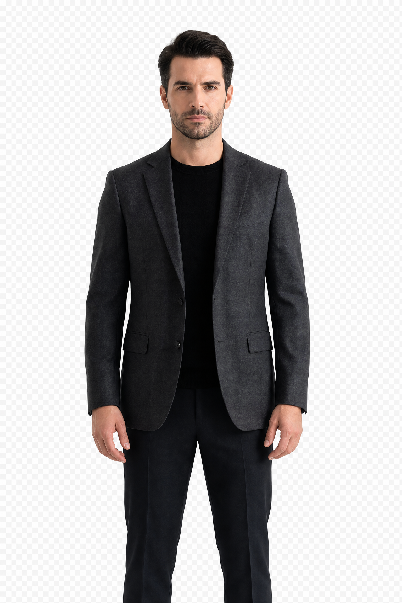

QuantumSignal Engine
A local-first research workspace for visible data interfaces, model reasoning, simulation, evaluation, and operational boundaries.
View research product ↗I design dependable AI infrastructure, auditable agent workflows, spatial tools, and applied research products for people who need software they can understand and control.

A focused portfolio across local AI, agent infrastructure, evidence systems, spatial computing, and applied research.
A local-first research workspace for visible data interfaces, model reasoning, simulation, evaluation, and operational boundaries.
View research product ↗A portable local LLM command center for inspectable workflows, approval gates, audit logs, and operator-owned execution.
View project ↗Structured inference, confidence thresholds, human review, and traceable decisions for high-accountability environments.
View framework ↗Evidence reconciliation for provenance-aware agent memory and action, reducing unsupported leaps between context and decisions.
View framework ↗A compact, versioned message protocol for predictable specialist-agent communication and safe escalation paths.
View protocol ↗Conversational AI-driven 3D asset and animation workflows that bring language and spatial iteration into one system.
View studio ↗“The best systems are not the ones that look autonomous.
They are the ones people can question.”
I work at the layer around the model: state, permissions, evidence, interfaces, approvals, and recovery. That is where experimental intelligence becomes a tool someone can responsibly use.
The through-line is simple: keep sensitive workflows close to the operator, make meaningful actions inspectable, and be honest about readiness.
If you are working on local AI, agent infrastructure, workflow reliability, spatial interfaces, or safe research tooling, I am interested in practical collaborations.